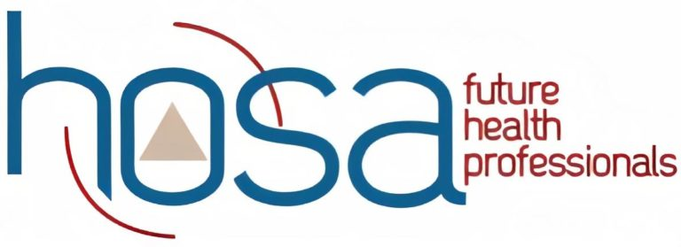

Volunteers in Plano is a city program designed to connect people to volunteer positions and exclusive opportunities to serve their community. During my time here, I educated children by instructing them with various activities set up at public libraries in various locations throughout the City of Plano. I also had a major project that involved examining creek water quality for the city's environmental department using various chemistry procedures. with coordination of partners.
Local chapter of national organization for students interested in futures in the medical field. Elected to Public Relations officer through student election. Worked with other officers to address decisions involving collobaration with non-profit organizations and encouraged member participation in service activities through social media campaigns.
At the UT Southwestern Medical Center, I volunteered at the information desk and my job involved providing information and directions to visitors to the hospital. I occasionally was given the responsibility to escort patients to various locations throughout the buildings, which helped me gain essential communication and interpersonal skills.
I consistently provided volunteering services to the Sunrise Senior Assisted Living Facility from early middle school till late high school. My duties involved assisting elderly residents during activities such as bingo or other social gatherings. I also occasionally worked in the facility dining room by serving food and washing dishes in the kitchen.